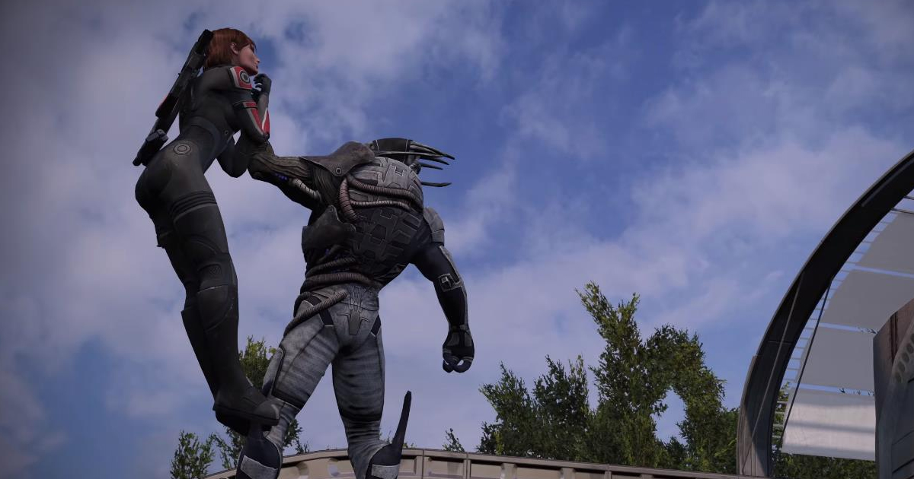

Level design is one of the core elements of game development. Understanding your goals and basic principles is crucial in creating a great experience for players. Here’re a few tips for beginners from Grant Morgan, an indie dev working on an untitled project and game design critic focusing on dialogue and level design.
Remember the first video game level that really grabbed you? What made it special? What did it look like? What made it your favorite level and why? If you’re just starting out as a game developer, these are things you need to consider when you’re figuring out what your first levels are going to look like.
When designing a level in a video game, a lot more goes into it than simply putting together a bunch of areas with enemy encounters and secrets to explore and calling it a day. In this article, we go over the basic fundamentals of game level design, and how you should go about doing so.
Depending on your game, you’re going to want to design levels that fit the genre and atmosphere of the title you’re aiming for.
For example, if you’re creating a level for a horror game, you’ll want to craft areas that are generally smaller, in order to ramp up the feeling of claustrophobia and no escape for the player. This is particularly important for first-person and VR games, where tight spaces drive home the feeling of suffocation and helplessness.
Conversely, if you’re designing a level for a fantasy action game that is heavy on combat and verticality, then you’ll want your combat areas to be open and free, giving your players room to experiment with different approaches to battle (unless it happens to be a boss level, in which case you’ll want to constrain the player to a smaller area).
Each genre of game will have a different feel to its level design, and that’s why you’ll rarely see a level feel the same from a game like Call of Duty to something like Elden Ring.
Before you do anything design-wise, you should figure out just how long you want this particular experience to last. While many games today have ditched the concept of levels as a whole, there are still specified
mission areas even in open world games, and designing those carries the same approach.
If your level is short, you want to make it impactful; if your level is long, be sure that it can engage the player the whole way through. Generally, your short levels are going to be maybe 20 to 30 minutes long, while your lengthier ones could go up to an hour.
While everyone wants to create the next Ravenholm when it comes to a level, not everyone has the time to craft the perfect one, especially if you’re an independent developer with a tight timeline. Hence you need to figure out how to maximize your effort in that time frame.
The most important thing about any videogame level is that it’s fun to play through. You might not always have all the time to add intricate details and specific scripted events, and when that happens, you must improvise.
Consider what is important in the game, what the plot is asking for, and where you want your player’s character to get to. If you’re squeezed for time, nail those points and try to get there as quickly as you can.
The days when gamers would happily replay entire levels just to get a high score are long gone, and as a designer, you need to figure out where it makes sense for a player to save their progress. This will usually make the most sense before lengthy cutscenes, boss battles, or other large areas of conflict that you have planned.
Within your time frame, think about what you want to accomplish with the journey you’re sending the player on.
Within your time frame, think about what you want to accomplish with the journey you’re sending the player on.
Maybe design a rest area, with a conversation script with the general controlling the siege engines and ballista. Then lead the player to scout weaknesses in the castle walls, while dealing with enemy archers. Think about the build-up to the main event. If you’ve got a boss you want players to fight on this level, take it into consideration when designing the tail end of the level. Think about what the motive is for the boss, and what would make the most sense for a precursor to facing them.
One great example is the Virmire mission in Mass Effect.
This level requires the player to take out an alien cloning facility created by the game’s big bad, Saren. During this mission, you approach an imposing military facility and start by fighting basic enemy waves. This ramps up until the clone army gets unleashed, and it all builds to a thrilling culmination: the one-on-one showdown with Saren.
It’s about an hour long in length and builds the tension perfectly before the exciting boss fight at the end. Along the way it takes the player along key areas such as the cloning lab that builds up the game’s plot. This is an example of a level being able to tell a story, even if the campaign or the game itself isn’t heavy on plot.
A level should always be conducive to the player’s chosen character. If you’ve got a big, brutish warrior, you likely aren’t going to be having a lot of climbing segments or sneaking behind obstacles. If your player’s role is a dextrous ninja, then you want to emphasize that by designing a space that allows for verticalities like ladders and long jumps as well as stealth.
You should also consider the character’s weapons and equipment. Do they use a sword? A gun? A unique weapon that is both melee and ranged? If that’s the case, then make sure the fights line up with their armament. You don’t want your melee character going up against waves of ranged enemies, unless you have a mechanic built in to deal with that. And if your character is a ranged attacker, then swarming them with melee enemies may not be a good idea either.
Before you make anything official, bring out a sketch pad or drawing app and draw the level out as you see it in your head.
Mark areas that are safe zones and possible save spots with an S to keep track of them, and put red Xs in areas you plan to have the conflicts occur. Figure out what kinds of enemies will appear at which point. For example, your melee and ranged enemies can appear together in a fight, but make sure they are spaced out, such as putting your ranged attackers atop a barricade of sorts, and letting your melee enemies charge at you while they fire at a distance.
By turning your design into a visual map, you have a tangible flow from which to work from. This allows you to be faster and more efficient come coding time.
The best thing I can tell you about level design in video games is this: be original.
Your level is a reflection of you, so make it personal; give it something that only you can give it, whether it be an atmospheric choice, a scripted event, a soaring soundtrack, or a unique boss fight.
There is always something special you can dream up to make your game feel different from the rest, and I hope this guide has put you on the right track to do so.